Zoek je een mogelijkheid om data en 3D modellen aantrekkelijk en in samenhang in beeld te brengen in een online 3D omgeving, boven èn onder het maaiveld?
Netherlands3D is ontwikkeld om precies dat te doen! Want één kaart vertelt zelden het hele verhaal. Netherlands3D biedt de mogelijkheid om kaarten, gebouwen, ondergrond en eigen 3D-modellen samen in beeld te brengen, zodat je in één oogopslag ziet hoe alles met elkaar samenhangt. Sleep je eigen bestand erbij en ontdek direct hoe het past in de bestaande omgeving - zonder abonnement en zonder ingewikkelde software of downloads.
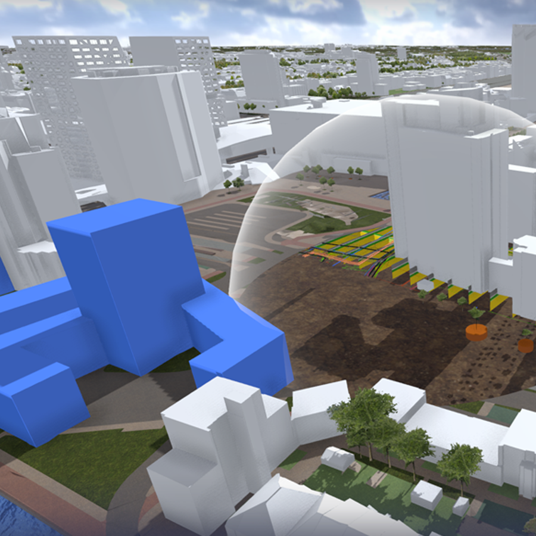
Waarom deze ontwikkeling?
Direct inzicht in een ruimtelijke situatie, onder èn boven de grond, overal in Nederland!
Wat betekent een hittegolf voor jouw straat? Hoe zien de nieuwe bouwplannen er uit? Waar gaat verkeer vastlopen als de verkeerslichten niet werken? Kunnen hier goed bomen groeien? Bij dit soort vragen is er behoefte aan één gedeeld beeld van de werkelijkheid, boven én onder het maaiveld. Netherlands3D maakt het mogelijk technische geo-informatie uit onder meer de BGT, AHN, BAG, sensordata of uitkomsten van rekentools toegankelijk te maken voor iedereen, zonder gespecialiseerde GIS-kennis. Zo wordt de digitale tweeling niet alleen een instrument waar data bij elkaar komt, maar vooral een gesprek: bestuurders, ontwerpers en bewoners zien letterlijk wat een plan betekent voor hun omgeving.
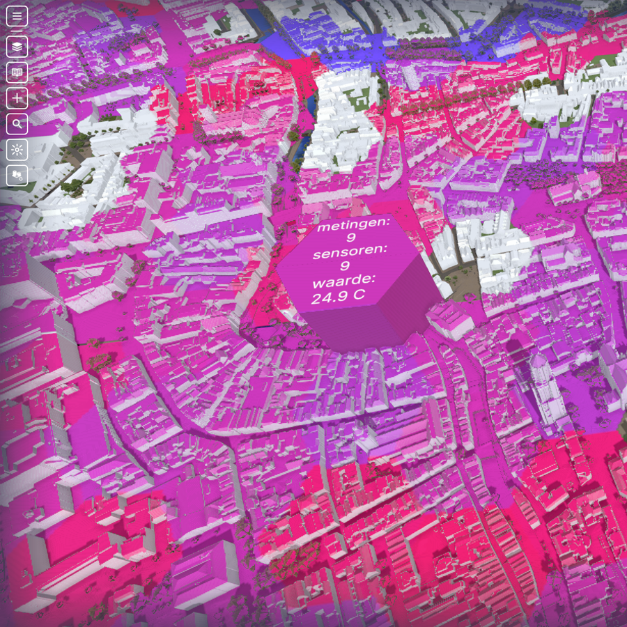
Doelgroep
Voor wie is Netherlands3D?
Student, ambtenaar, ontwerper, bewoner of ondernemer: Netherlands3D is er voor iedereen die grip wil krijgen op ruimtelijke vraagstukken. Gemeenten en provincies gebruiken het platform om nieuwbouw te toetsen aan de omgeving en aan regelgeving; ontwerpers en planologen zetten het in om plannen al vroeg op haalbaarheid te beoordelen. En omdat het platform vrij toegankelijk is, kan iedereen meekijken en meedenken.
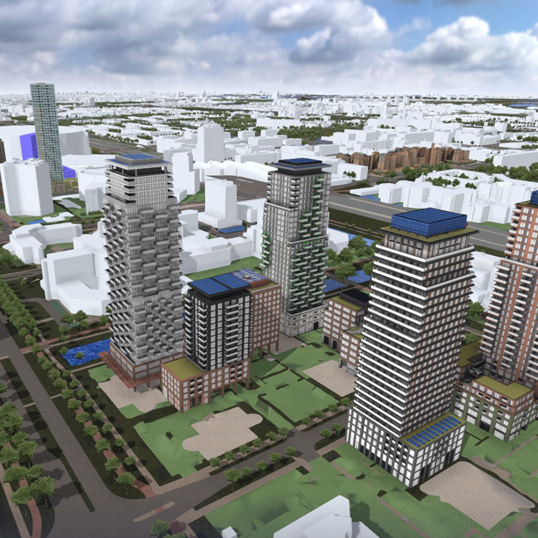
Organisaties achter Netherlands3D
Unieke samenwerking tussen provincies en gemeenten!
Ruimtelijke opgaven stoppen niet bij de gemeentegrens. Daarom hebben Gemeente Amsterdam, Gemeente Utrecht, Provincie Flevoland en Provincie Utrecht de handen ineengeslagen: samen ontwikkelen, samen investeren, samen profiteren. Door capaciteit en kosten te delen, houden vier organisaties grip op hun eigen instrument - tegen een fractie van wat het alleen zou kosten.
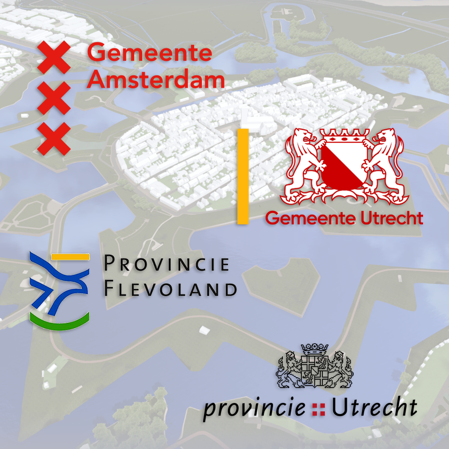
Samenhang met de NLDT
Netherlands3D is onderdeel van het ecosysteem van digitale tweelingen.
Netherlands3D is zelf geen digitale tweeling - het is het venster waardoor je er één bekijkt. Binnen de nationale referentiearchitectuur voor digitale tweelingen (NLDT) vormt Netherlands3D de laag visualisatie - de plek waar data en rekenmodellen tot leven komen voor gebruikers. Data, rekentools en het fundament zorgen voor de techniek op de achtergrond; Netherlands3D zorgt dat je het ook écht begrijpt.
Meer informatie over de NLDT architectuur is te vinden op de site van Stichting Geonovum.
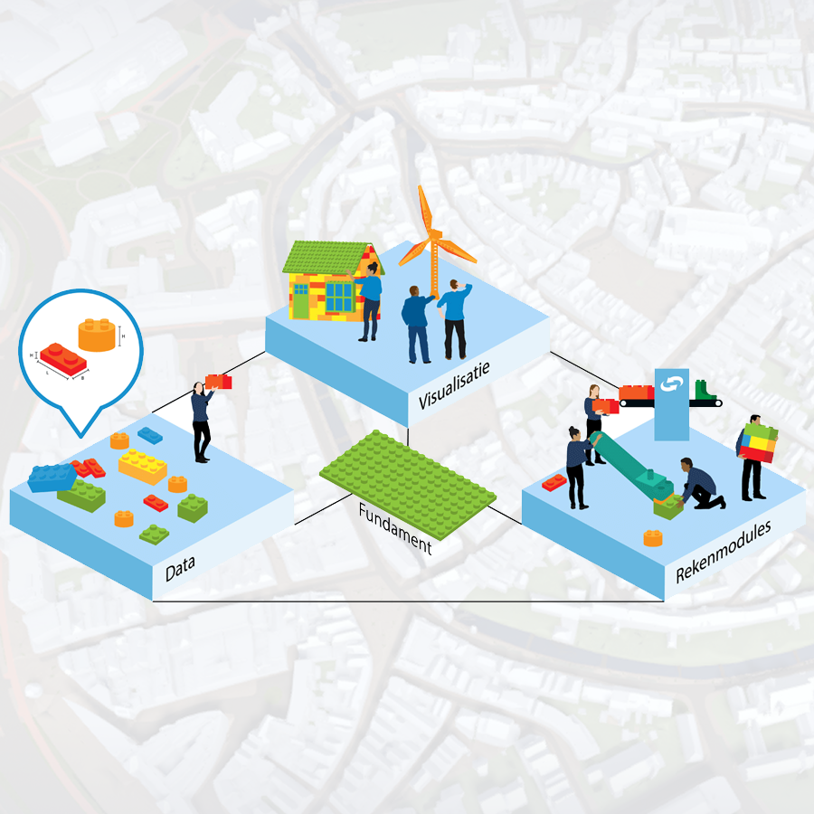
Ontwikkelingen
Wat staat er en wat gaat komen?
De behoefte aan een open platform zoals Netherlands3D blijkt groot. Dè reden dat de huidige 4 organisaties de ontwikkeling samen onder de principes van common ground uitvoeren zodat iedereen kan meeprofiteren van deze ontwikkeling. Tot op heden is vooral gewerkt aan het technische fundament en aan een aantal basis functionaliteiten.
Voor de volgende fase zijn we op zoek naar een betrouwbare partner die het platform stabiel en toekomstbestendig wil gaan beheren. En tegelijk de mogelijkheid biedt om nieuwe functionaleiten toe te voegen. Zo hopen we enerzijds een generiek toegankelijk en schaalbaar platform aan te kunnen blijven bieden en anderzijds maatwerk te kunnen leveren aan organisaties die een meer persoonlijke omgeving wensen. Denk aan een eigen startlocatie, standaard eigen datasets ingeladen of vooraf ingestelde functionaliteiten.
Bouw je graag zelf mee aan het platform? Dan ben je van harte welkom! Als organisatie én als ontwikkelaar.
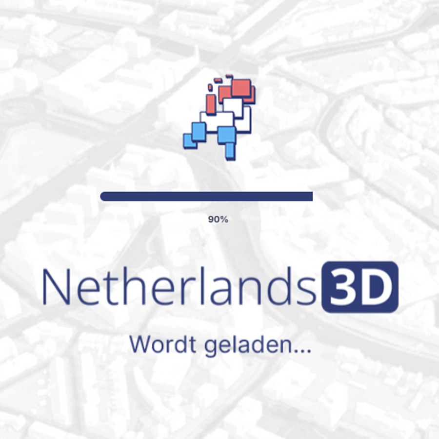
Hoe gebruik ik Netherlands3D?
Direct aan de slag, zonder handleiding
Data toevoegen, lagen combineren, door de 3D-omgeving navigeren: je hoeft geen specialist te zijn om Netherlands3D goed te kunnen gebruiken. Open de viewer, sleep een bestand naar binnen of kies een databron met de plus-knop en verken Nederland zoals je het nog niet eerder zag.
Bij het starten van Netherlands3D zie je alleen een basisomgeving, bestaande uit 3D gebouwen, bomen en het maaiveld. Alle andere data en bestanden kun je zelf toevoegen, afhankelijk van jouw behoefte. Bekijk voor de formaten die we op dit ogenblik ondersteunen.
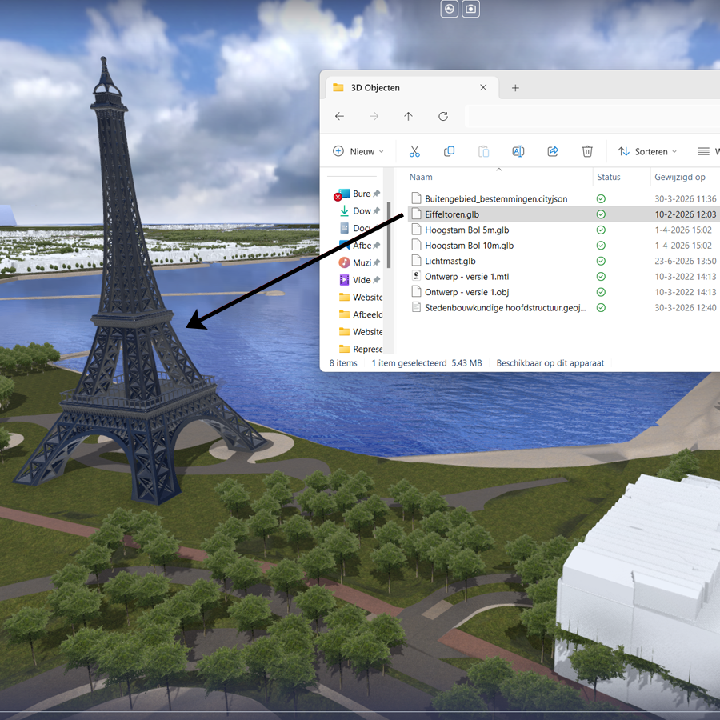
Navigeren
Soepel navigeren in 3D
Voor de beste gebruikerservaring raden we een van de volgende internetbrowsers aan: Microsoft Edge, Google Chrome of Mozilla Firefox. Tevens raden we aan een muis of controller te gebruiken bij het gebruik van Netherlands3D. Navigeren gaat als volgt:
Klikken & slepen - linkermuisknop klikken en slepen verschuift het 3D-model.
Muiswiel draaien - draai het muiswiel om in en uit te zoomen op het model.
Shift & muiswiel draaien - houd Shift ingedrukt en draai het muiswiel voor sneller in- en uitzoomen.
Wiel klikken & slepen - klik het muiswiel in en sleep om het 3D-model te roteren rond een vastgezet punt. Geen muiswiel? Gebruik dan de linker Alt-toets en linkermuisknop.
Draaien bij close-up - draai vanuit het standpunt met de linker Ctrl-toets en de linkermuisknop.
Rechtermuisknop klikken - opent het contextmenu.
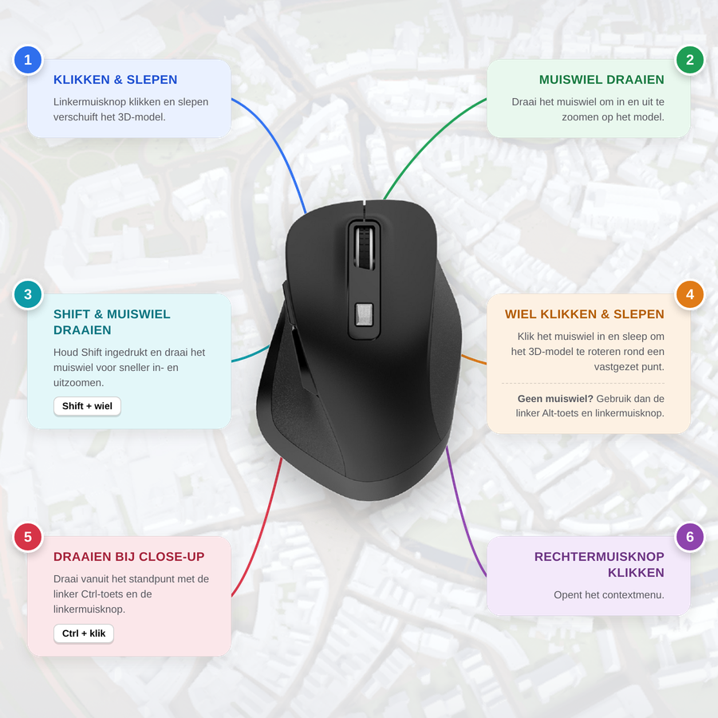
Lijst van functionaliteiten
Alles wat de viewer voor je kan doen
Netherlands3D visualiseert data. Om deze data efficiënt en zo interactief mogelijk weer te geven op de manier zoals jij wil, zijn een groot aantal functionaliteiten beschikbaar. Van het downloaden van een gebied tot het simuleren van de zonnestand. En van functies om te navigeren en data toe te voegen tot het naar eigen inzicht instellen van de weergave ervan. Projecten kunnen ook opgeslagen en gedeeld worden.
Een compleet en actueel overzicht van alle functionaliteiten verschijnt binnenkort op deze pagina. Wil je weten wat er ongeveer beschikbaar is, kijk dan eens op de oude (!) functionaliteiten-overzichtspagina.
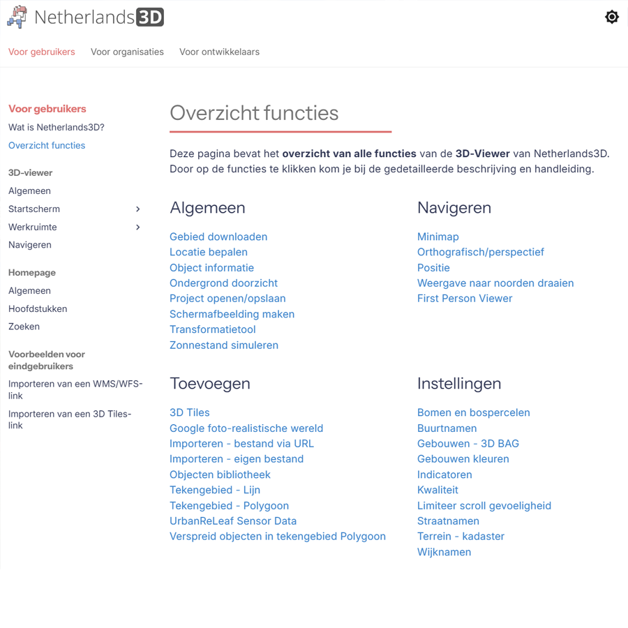
Voorbeelden uit de praktijk
Netherlands3D in actie
Van massastudies in nieuwbouwprojecten tot communicatie- en participatietrajecten: gemeenten en provincies zetten Netherlands3D al in om concrete, vaak ruimtelijke, vraagstukken tastbaar te maken. Klik op een project voor meer uitleg, beeldmateriaal en kenmerken.
Hulpmiddelen
Een goede voorbereiding is het halve werk!
Los van de Netherlands3D-viewer bieden we een aantal kleine tools die je helpen om eigen data geschikt te maken voor Netherlands3D. Deze tools zijn veelal ontwikkeld met inzet van AI en zijn daarom vrij te gebruiken. Bekijk hieronder wat ze doen, download ze als ZIP-bestand en gebruik ze om jouw werk te versnellen!
Visualisatie van data
Een 3D Wereld op basis van gaming technologie.
Netherlands3D is een open source visualisatieplatform waarmee gemeenten, provincies en andere organisaties digitale 3D-weergaves van hun leefomgeving samenstellen op basis van verschillende databronnen. Voor het goed onderbouwd kunnen beantwoorden van verschillende beleidsvraagstukken, is het noodzakelijk om data gecombineerd en integraal bij elkaar te brengen. Visualisatie hiervan helpt om de samenhang te begrijpen. De keuze is gemaakt om het platform niet te bouwen op traditionele GIS-software, maar op een game-engine: Unity. Geodata zoals gebouwmodellen, terreinhoogtes en kadastergegevens worden ingeladen als 3D-tiles en gerenderd met dezelfde technieken die games gebruiken voor real-time graphics: dynamische belichting, level-of-detail-systemen, shaders en een asset-pipeline die is gebouwd voor grote, interactieve werelden. Datavisualisatie via gaming engines biedt veel voordelen.
Vanuit de gaming engine wordt het resultaat gecompileerd naar WebGL, zodat de viewer direct in de browser draait. Er is geen installatie nodig: een link volstaat om een volledig interactief 3D-model van een stad of regio te openen. Dit verlaagt de drempel voor gebruik door beleidsmakers, ontwerpers en burgers flink. Vanuit de viewer zijn er allerlei mogelijkheden om extra databronnen te koppelen en in dezelfde 3D wereld weer te geven. Daarbij ondersteunen we verschillende , veelal de formatien die voldoen aan de OGC-Standaarden. Het project is schaalbaar opgezet, met herbruikbare onderdelen, en komt daardoor terug in meerdere lokale implementaties zoals 3D Amsterdam en 3D Utrecht.
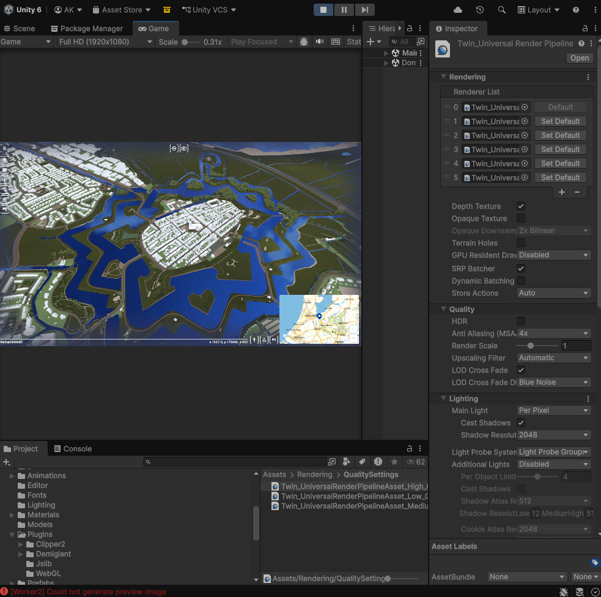
Platform keuze
Bewust maken van keuzes
Bij de start van het project in 2019 (toen nog 3D Amsterdam), is besloten te gaan ontwikkelen op het Unity platform. Op dat moment was Unity WebGL de beste keuze voor Web-applicaties als directe export uit een gaming engine. En hoewel er tegenwoordig allerlei concurrerende producten en combinaties van producten op de markt voorhanden zijn, biedt de combinatie van gaming-technologie en WebGL voor ons project nog steeds duidelijke voordelen. Unity levert tooling voor real-time 3D die in reguliere GIS-stacks ontbreekt, zoals performance-profiling, physics en een grote bibliotheek aan importers en shaders. Doordat alles in de browser draait, is het platform cross-platform zonder aparte builds per besturingssysteem, en is delen met niet-technische stakeholders eenvoudig.
Beperkingen zijn er ook. Unity WebGL-builds zijn relatief groot, wat leidt tot lange laadtijden bij een eerste bezoek. Onze ontwikkelaars maken daarom altijd een afweging tussen optimalistie in performance en optimalisatie van (render) weergave voor eindgebruikers. Mobiele ondersteuning is op dit moment niet geoptimaliseerd door beperkt browsergeheugen op mobiele apparaten, de ontwikkeling richt zich vooralsnog op desktop gebruikers. Prestaties hangen sterk af van de GPU en WebGL-implementatie van de browser van de eindgebruiker, wat tot wisselende ervaringen leidt. We houden de markt en alle nieuwe ontwikkelingen daarin nauwlettend in de gaten om continu de prestaties van Netherlands3D te verbeteren en zo een optimale gebruikerservaring te garanderen.
Voor project 'De Hollandse Waterlinie wordt de Netherlands3D omgeving omgezet naar een stand-alone versie
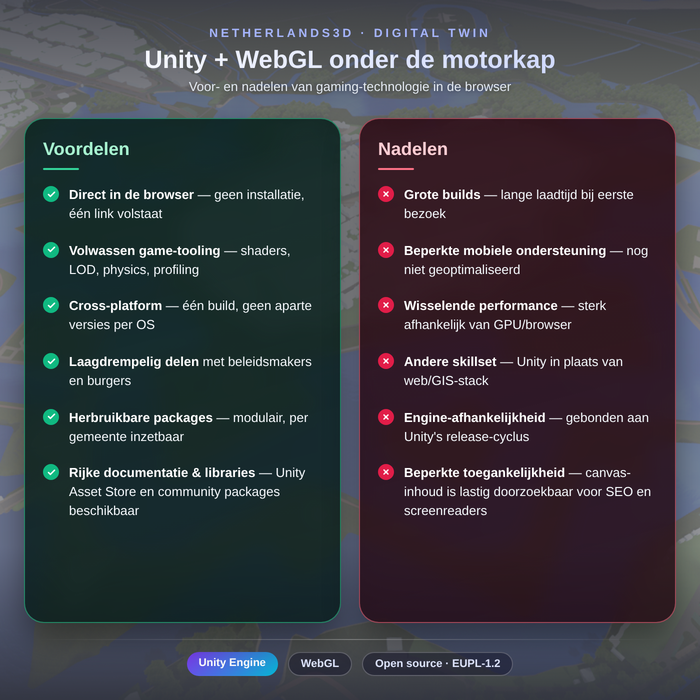
Visualisatie
Slim hergebruiken in plaats van opnieuw bouwen
Herbruikbaar in plaats van opnieuw uitvinden: Netherlands3D volgt de Common Ground-principes, met losgekoppelde, herbruikbare bouwstenen. Dat maakt samenwerken tussen overheden eenvoudiger en voorkomt dat iedereen zijn eigen wiel blijft uitvinden.
Netherlands3D is te vinden op github.com/Netherlands3D, met de generieke viewer en het skeletproject in de twin-repository, uitgebracht onder de EUPL-1.2-licentie.
Netherlands3D is geen kant-en-klaar pakket, maar een modulair, open-source platform. Elke ontwikkelaar kan eigen datasets en functionaliteiten toevoegen en zo het platform naar eigen inzicht uitbreiden. Technische documentatie volgt binnenkort op deze pagina.
Voor ontwikkelaars
Onderdeel van een groter geheel
Netherlands3D staat niet op zichzelf, maar sluit aan op de nationale referentiearchitectuur voor digitale tweelingen. Hoe die samenhang er precies uitziet, lees je binnenkort op deze pagina.
Voor ontwikkelaars
Bouw mee aan Netherlands3D
Het platform is nooit af — en dat is precies de bedoeling. Wil je meebouwen aan Netherlands3D? Als ontwikkelaar ben je van harte welkom om mee te denken, code bij te dragen en het platform verder te brengen. Iedereen die wil bijdragen, nodigen we actief uit.
Contact
Team
Maak kennis met de mensen achter Netherlands3D. Een overzicht van het team volgt binnenkort op deze pagina.
Contact
Contactgegevens
Heb je een vraag of wil je in contact komen met het Netherlands3D team? De contactgegevens worden hier binnenkort toegevoegd.